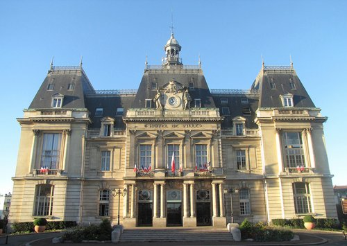

Siffer
Wassim
J'ai 20 ans et j'utilise des ordinateurs depuis mon enfance. Cette familiarité a fait naître mon intérêt pour l'informatique et m'a conduit vers le BTS SIO SISR, que je poursuis en 2ᵉ année à Schola Nova.
Mon parcours
Baccalauréat Technologique STI2D
Spécialité ITEC (Innovations Technologiques et Éco-conception), avec des enseignements en conception technologique, électronique et systèmes embarqués.
BTS SIO — Option SISR · 1ʳᵉ année
En première année, j'ai acquis les bases du support aux utilisateurs, des systèmes, des réseaux et de la cybersécurité. J'ai mis ces notions en pratique avec Active Directory, GLPI, Linux, la virtualisation et des travaux réseau sur Cisco Packet Tracer.
Stage d'un mois — Technicien support IT
Servier est un groupe pharmaceutique international indépendant, engagé dans la recherche et le progrès thérapeutique.
Chez Servier, j'ai traité des incidents utilisateurs de niveaux 1 et 2, diagnostiqué et entretenu des postes, participé à la masterisation et au déploiement, et accueilli de nouveaux collaborateurs. J'ai aussi contribué à l'inventaire, à la rédaction de tutoriels et aux interventions en datacenter.
Présentation du BTS SIO — option SISR
Le BTS Services Informatiques aux Organisations prépare à installer, administrer et sécuriser des systèmes et des réseaux, ainsi qu'à assurer l'assistance aux utilisateurs. En option SISR, je me spécialise dans les Solutions d'Infrastructure, Systèmes et Réseaux.
Mon rôle à la mairie de Saint-Maur
Au sein de la mairie de Saint-Maur-des-Fossés, qui compte 1 197 employés, mon rôle de technicien support contribue au bon fonctionnement des services municipaux. Je me déplace sur les différents sites, notamment les écoles, pour installer du matériel et faire des vérifications. Au bureau, l'équipe me délègue des tâches comme la configuration de switchs, l'ajout d'équipements dans Zabbix et le paramétrage des téléphones IP avec XIVO. Je participe aussi au remplacement de switchs, à l'installation d'onduleurs et au brassage d'une baie informatique.

Mon école — Schola Nova
Schola Nova est une école sociale et solidaire située à Paris. J'y poursuis ma 2ᵉ année de BTS SIO SISR en alternance en 2026–2027; la formation associe systèmes, réseaux et support aux utilisateurs.
Certifications obtenues
Cybersécurité des SI
- Panorama de la SSI — 88%
- Sécurité de l'authentification — 90%
- Sécurité sur Internet — 86%
- Poste de travail & nomadisme — 84%
RGPD & Données Personnelles
- Module 1 : Le RGPD et ses notions clés
- Responsabilités des acteurs
- Rôle du DPO et outils de conformité
- Application en entreprise
Introduction to Cybersecurity
- Bases de la sécurité en ligne
- Menaces, attaques et vulnérabilités
- Protection individuelle et organisationnelle
- Carrières en cybersécurité
Networking Basics
- Communication réseau, types et protocoles
- Ethernet et IPv4
- Routeurs et connectivité réseau
- Dépannage et configuration Wi-Fi sécurisée
Tableau de synthèse SISR
Réseaux & Commutation
Segmentation VLAN, configuration de trunks 802.1Q, routage inter-VLAN (Router-on-a-Stick), NAT/PAT et adressage IPv4.
Administration Système
Déploiement Active Directory, gestion DNS/DHCP, création d'OU, comptes et groupes, GPO, partages réseau et permissions NTFS.
Équipements Cisco
Configuration de switchs et routeurs en CLI (IOS), débogage avec show interfaces trunk / show vlan brief, simulation Packet Tracer.
Virtualisation & Support
Création et gestion de machines virtuelles sous VirtualBox. Gestion de parc informatique et ticketing avec GLPI (profils admin, technicien, self-service).
Linux
Navigation en ligne de commande, gestion de l'arborescence, manipulation de fichiers, gestion des droits et permissions sous distributions Linux.
Cybersécurité & RGPD
Sensibilisation aux menaces (phishing, ransomware, failles réseau), principes SSI (ANSSI), conformité RGPD et protection des données personnelles.
Infrastructure BioTech
Conception et déploiement d'une infrastructure réseau pour BioTech sur trois étages : segmentation VLAN, routage inter-VLAN, NAT/PAT, DHCP/DNS et connexion Internet sécurisée.
- Création de cinq VLAN pour les RH, le bureau d'études, les visiteurs, le management et les serveurs
- Configuration de trois switchs Cisco en mode access et trunk 802.1Q
- Mise en place du routage inter-VLAN avec Router-on-a-Stick
- Configuration du NAT/PAT pour l'accès Internet
- Déploiement du DHCP avec relais et du DNS intranet
- Validation de la connectivité DHCP, DNS et Internet
Mise en place de services Windows Server et d'outils de gestion pour centraliser les comptes, sécuriser les accès et suivre le parc informatique de BioTech.
- Déploiement d'Active Directory, DNS et DHCP, puis intégration de postes clients au domaine
- Organisation des utilisateurs et des groupes dans des unités adaptées aux services
- Sécurisation des partages avec des droits NTFS et déploiement de lecteurs par GPO
- Intégration de GLPI avec Active Directory/LDAP et inventaire automatisé des postes
- Configuration des habilitations GLPI pour cloisonner l'accès aux équipements par service
Travaux pratiques
Maîtrise du cycle complet d'un ticket d'assistance dans GLPI, des profils utilisateurs à la clôture, en passant par l'assignation et la traçabilité matériel.
- Création compte utilisateur "Carl Paul" avec profil Self-Service
- Création du ticket côté utilisateur (urgence, description)
- Prise en charge technicien : auto-assignation + association matériel
- Résolution documentée → statut "Résolu" → validation utilisateur
- Clôture définitive du ticket avec historique complet
Conception d'un réseau segmenté (3 VLANs : Administration, Production, Invités) avec attribution automatique d'adresses IP et résolution de noms.
- Création et attribution de VLANs sur switch
- Ports en mode Access et Trunk
- Serveur DHCP avec plages d'adresses définies
- Résolution de noms opérationnelle
Déploiement de machines virtuelles sous VirtualBox pour tester différents OS et configurations réseau. Prise en main de Linux en ligne de commande.
- Installation et configuration de VMs (RAM, stockage, réseau)
- Navigation dans l'arborescence Linux (ls, cd, pwd, mkdir…)
- Gestion des fichiers et des permissions (chmod, chown)
- Isolation des environnements de test
L'hameçonnage en 2025–2026
🎣 Comprendre l'hameçonnage
- Une personne malveillante se fait passer pour un organisme, une entreprise ou un contact connu.
- Le message pousse à cliquer, répondre, appeler un faux numéro ou saisir des informations sur un faux site.
- Les objectifs sont souvent le vol de données, la récupération d'identifiants ou la prise de contrôle d'un compte.
📊 Chiffres clés 2025
- L'hameçonnage représente près d'un tiers des assistances de Cybermalveillance.gouv.fr, tous publics confondus.
- Les demandes d'assistance liées à l'hameçonnage ont progressé de 70 % par rapport à 2024.
- Les campagnes passent par courriel, SMS, appels audio et messageries; les messages sont de plus en plus variés et personnalisés.
📱 Alerte récente : faux votes sur WhatsApp
- Une personne reçoit d'un contact un lien pour voter à un faux concours.
- La fausse page demande son numéro puis un code de validation WhatsApp.
- Le code permet en réalité à l'escroc d'ajouter un appareil et de prendre le contrôle du compte.
- Le compte piraté sert ensuite à diffuser l'arnaque aux contacts de la victime.
⚙️ Comment l'attaque se propage
- Un compte ou des données personnelles déjà compromis rendent le message plus crédible.
- Les escrocs personnalisent les messages et usurpent des marques, administrations ou proches.
- Les comptes piratés relaient ensuite les liens frauduleux vers de nouvelles victimes.
- Les données volées peuvent alimenter d'autres arnaques, dont les faux conseillers bancaires.
🛡️ Réflexes de protection
- Ne jamais saisir ni transmettre un code de validation reçu par SMS ou dans une application.
- Vérifier une demande urgente en contactant la personne ou l'organisme par un autre canal.
- Ne pas ouvrir un lien inattendu; aller soi-même sur le site ou l'application officielle.
- Activer la vérification en deux étapes et contrôler régulièrement les appareils connectés.
- En cas de compte compromis, prévenir ses contacts et retirer tout appareil inconnu.
🏢 Enjeux pour les organisations
- En 2025, l'ANSSI a traité 3 586 événements de sécurité en France.
- Les ministères et collectivités territoriales font partie des secteurs particulièrement visés.
- Un compte compromis peut exposer des données, faciliter des fraudes et servir de point d'entrée au système d'information.
- La sensibilisation, le signalement rapide et la protection des comptes réduisent les risques de propagation.
Restons en contact
Échangeons
Actuellement en 2ᵉ année de BTS SIO SISR à Schola Nova et alternant technicien support à la mairie de Saint-Maur, je développe mes compétences en support informatique, systèmes et réseaux.